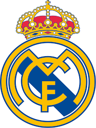

Real Madrid Vence Al Ahly e Vai à Final do Mundial de Clubes
Leila Ayala - Rabat, 14 de fevereiro de 2024 – O Real Madrid venceu o Al Ahly por 4 a 1 na semifinal do Mundial de Clubes da FIFA, disputada no Marrocos. Vinicius Júnior, Federico Valverde, Rodrygo e Sergio Arribas marcaram os gols do time espanhol. Ahmed Abdel Kader descontou para o time egípcio.
O jogo no Estádio Príncipe Moulay Abdellah, em Rabat, começou com o Real Madrid dominando as ações. O time espanhol abriu o placar aos 13 minutos, com gol de Vinicius Júnior, após cruzamento de Rodrygo.
O Al Ahly empatou aos 30 minutos, com gol de Ahmed Abdel Kader, após falha da defesa do Real Madrid. No entanto, o time espanhol voltou a ficar na frente aos 42 minutos, com gol de Federico Valverde.
Na segunda etapa, o Real Madrid ampliou o placar aos 16 minutos, com gol de Rodrygo, após belo passe de Vinicius Júnior. O time espanhol fechou o placar aos 38 minutos, com gol de Sergio Arribas.
Com a vitória, o Real Madrid vai à final do Mundial de Clubes da FIFA e enfrentará o Al Hilal, da Arábia Saudita, no sábado (18).